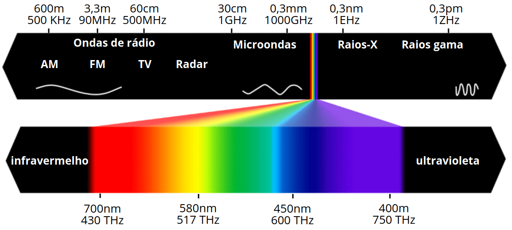
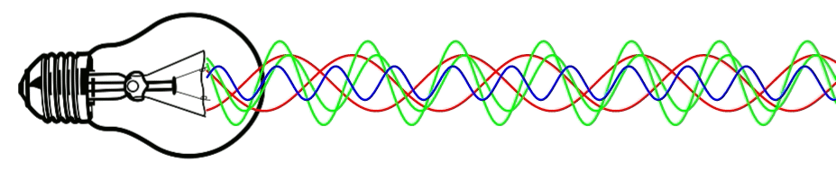
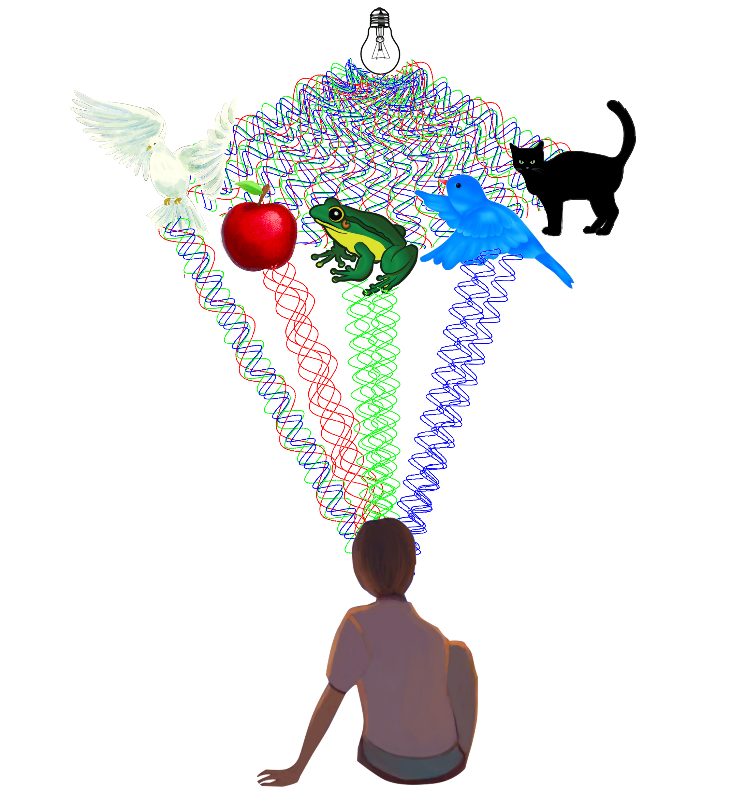
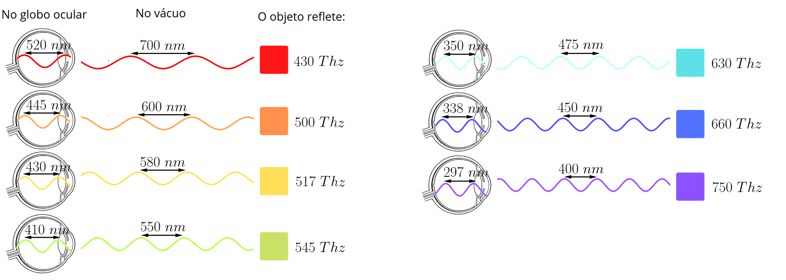
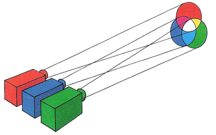

Em conformidade com os nossos estudos pregressos, consideramos luz toda onda eletromagnética capaz de sensibilizar a nossa retina. As ondas eletromagnéticas capazes de sensibilizá-la são aquelas cuja frequência de vibração se encontra entre aproximadamente 400 e 800 THz (tera-hertz [1012 Hz]). As ondas que vibram nesse intervalo sensibilizam nossa retina de modo diferente conforme sua frequência: por exemplo, as que vibram com frequências próximas a 400 THz são identificadas como ondas de cor violeta, enquanto aquelas que vibram com frequência de aproximadamente 800 THz são identificadas como ondas de cor vermelha.

Sabendo agora que ondas de diferentes frequências — embora todas visíveis, todas luz — originam percepções diferentes quando interpretadas pelo nosso cérebro e que, por essa mesma razão, são classificadas de acordo com suas respectivas frequências, faz-se necessário distinguir dois tipos de luz:
Luz monocromática: Dizemos que a luz, um raio ou mesmo um feixe de luz é monocromático quando é formado apenas por ondas de uma mesma frequência.
Luz policromática: Dizemos que a luz, um raio ou mesmo um feixe de luz é policromático quando é formado por ondas de duas ou mais frequências.

As fontes de luz emanam ondas eletromagnéticas de frequências visíveis. Essa luz, ao atingir um corpo qualquer, poderá, para cada frequência (para cada cor) que a compõe, ser absorvida ou refletida. Essa característica que o corpo possui — a de absorver determinadas cores e refletir outras — é o que faz dele um objeto negro ou colorido de uma cor específica. Se uma determinada cor será absorvida ou refletida, dependerá da composição química superficial do corpo em questão.
A seguir está exemplificado o que ocorre em relação às cores de alguns corpos:

Corpo de cor branca: são os corpos que não absorvem nenhuma onda eletromagnética do espectro visível: refletem todas elas. Referimo-nos a esses materiais como alvos, que possuem cor branca.
Corpo de cor específica (vermelha, verde, ciano, violeta…): são os corpos que refletem apenas uma pequena faixa de frequência do espectro eletromagnético — por exemplo, a faixa do vermelho — e absorvem todas as demais; logo, dizemos que esse material é rubro, isto é, tem cor vermelha.
Corpo negro: um material que absorve todas as ondas eletromagnéticas do espectro visível não refletirá onda de frequência visível alguma, ou seja, não refletirá cor alguma; dizemos, então, que esse material é negro, ou que tem “cor” preta.
A imagem abaixo informa as características das ondas de cada cor. Lembremo-nos de que, embora estejam representadas apenas sete cores, existem, na realidade, incontáveis cores.


Se sobre os nossos olhos (desde que não haja problemas específicos de visão) incidirmos radiação eletromagnética de determinada frequência A — leia-se cor A — e, concomitantemente, incidirmos mais radiação de uma outra frequência definida B, o resultado será a leitura de uma nova cor que não é nem A nem B, mas sim uma cor sintetizada a partir dessas duas. Se incidirmos sobre os nossos olhos ondas de todas as frequências do espectro visível, veremos aquilo que chamamos de cor branca.
Diferentemente do que ocorre com as ondas, quando somávamos todas as cores e obtínhamos a cor branca, ao se somar pigmentos de todos os tipos obtemos a cor preta. Isso decorre do fato de que as tintas funcionam como filtros, com os quais revestimos os objetos. Quando pintamos algo de, digamos, azul, estabelecemos que apenas a cor azul será refletida — e todas as demais serão absorvidas. Ao se misturarem dois pigmentos, por exemplo, o azul e o vermelho, o pigmento azul garante que apenas o azul seja refletido e que o vermelho seja bloqueado; e o pigmento vermelho, que apenas a cor vermelha seja refletida e que o azul seja bloqueado; ocorre, então, que o composto químico da tinta azul absorve a cor vermelha e o composto da tinta vermelha absorve a cor azul, gerando como resultado uma cor enegrecida, que não reflete nem azul nem vermelho.